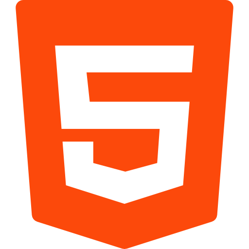
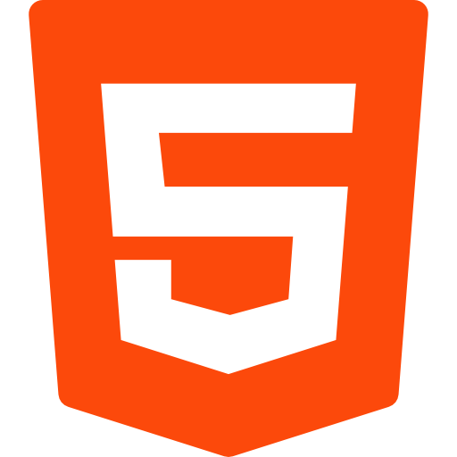

Olá, eu sou yLost
Como posso te ajudar?
 



Quem sou eu?
Sou Desenvolvedor e apaixonado por tecnologia desde a infância. Meu nome é yLost. Atualmente, foco no desenvolvimento Front-End, mas meu objetivo é me tornar um programador Full-Stack. Estou sempre em busca de aprender, evoluir e contribuir com soluções criativas para o mundo da programação.